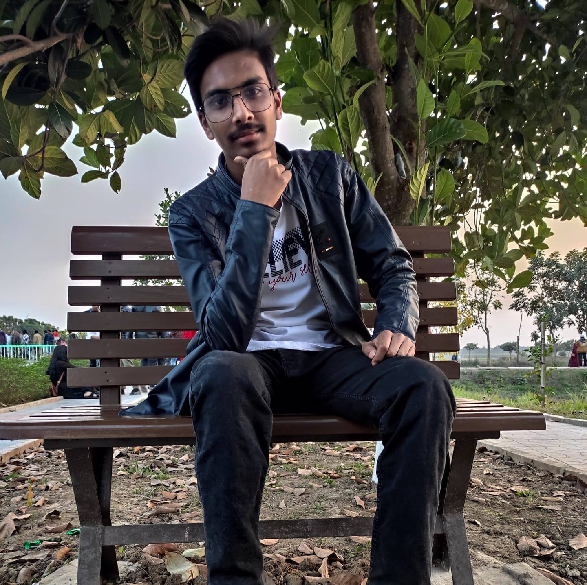

-

02 September 2021
Md.Arian Islam Fahim
Hello! I’m Md.Arian Islam Fahim. I'm a prolific web designer from Bangladesh. I learned Web Designing from various online courses and attended events to gain knowledge. I am a certified Web Desinger Consultant from perpetual It World.I am also a certified Bug Tester Consultant from Oasis Informatics. In my designing journey, I have worked for a few companies and currently I am freelancing. My main focus is to bring profit to both the business owner and customer.
-

02 September 2021
Md.Rafi Uz Zaman Raad
Hello! I’m Md.Rafi Uz Zaman Raad. I'm a prolific web designer from Bangladesh. I learned Web Designing from various online courses and attended events to gain knowledge. I am a certified Web Desinger Consultant from perpetual It World.I am also a certified Bug Tester Consultant from Oasis Informatics. In my designing journey, I have worked for a few companies and currently I am freelancing. My main focus is to bring profit to both the business owner and customer.
-
02 September, 2021
Md.Shifatur Rahman
Hello! I'm Md.Shifatur Rahman.I am a certified Bug Tester Consultant from Oasis Informatics.I have worked for a few companies.